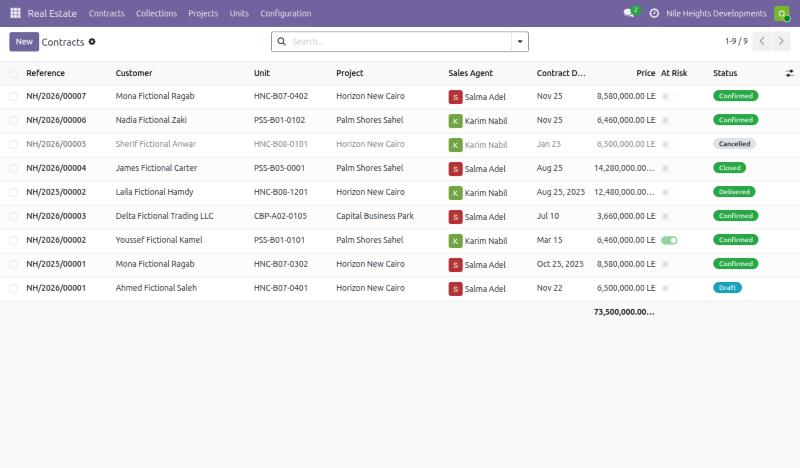
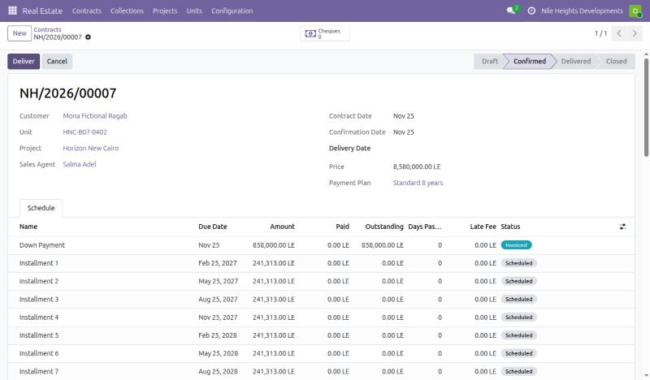
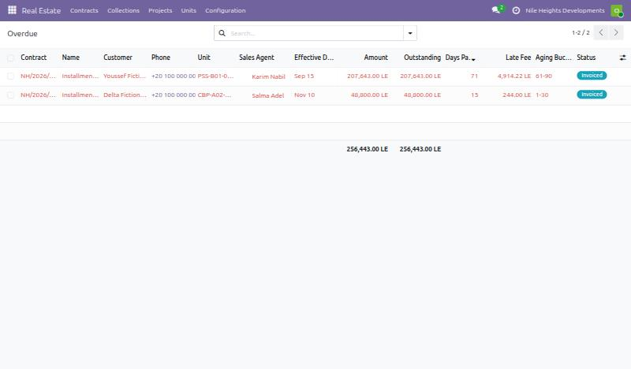
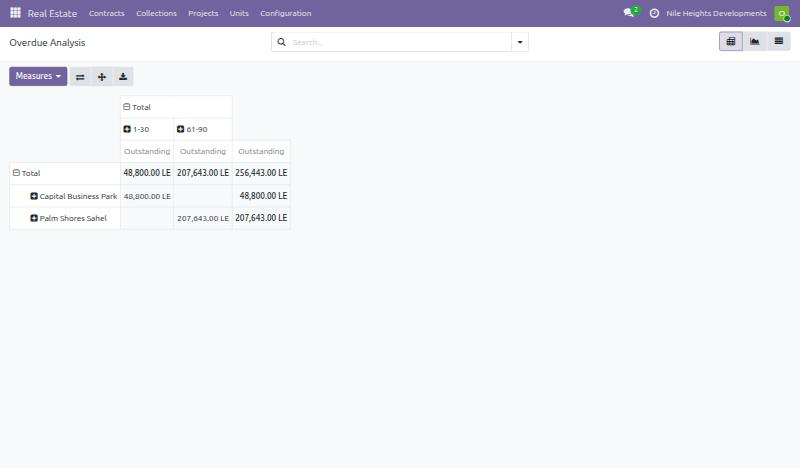
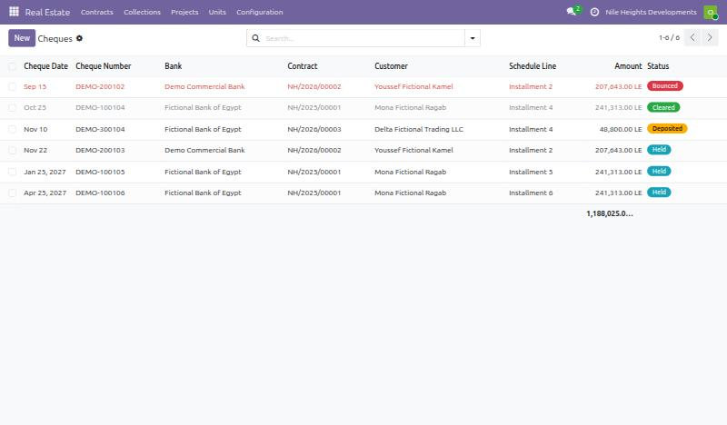
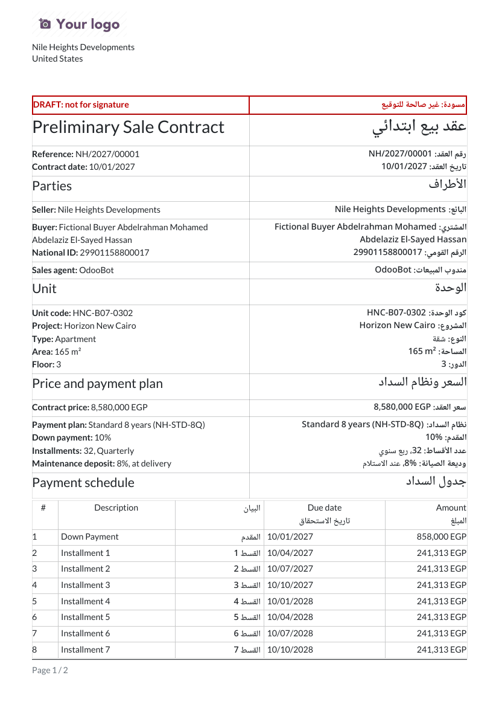
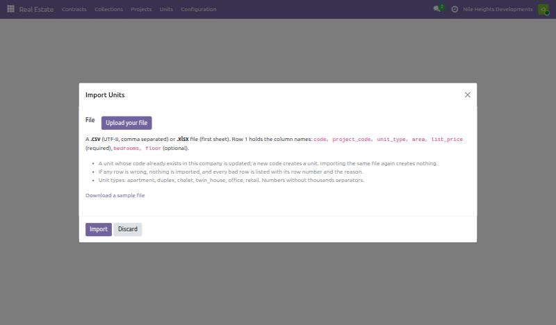

Installment sales and collections for Egyptian real-estate developers: contracts, payment schedules, one invoice per installment, late fees, post-dated cheques and a bilingual Arabic / English contract. Odoo 19 Community, on standard accounting.

In Egypt a unit is rarely paid in cash. The buyer pays a down payment, then years of monthly or quarterly installments, a maintenance deposit at delivery, and late fees on anything overdue — and usually hands over post-dated cheques for the whole schedule at signing. Odoo has payment terms, which split one invoice over several dates; it has no installment contract, no deposit, no late fee and no collections screen.
Money received before delivery is not revenue. Down payment and installment invoices post to a
configurable customer advances account, and the maintenance deposit to a deposit
liability account — never to income. Invoices carry no tax (residential unit sales are
VAT-exempt; confirm commercial units with your tax advisor). The module does not depend on a
localisation, so it installs on any chart of accounts; for an Egyptian company,
l10n_eg is recommended.

A confirmed contract and its payment schedule.

Overdue lines, days past due and late fees.

Overdue amounts by project and aging bucket.

Post-dated cheques and their states.

The contract, Arabic and English side by side.

Importing units from a spreadsheet.
l10n_eg for an Egyptian company).account and mail.openpyxl for Excel import (already in Odoo's own requirements).
Moving customer advances to revenue at delivery (planned for 1.1), ETA e-invoicing through
l10n_eg_edi_eta, cheque accounting entries, importing existing contracts, broker
commissions, resale, a customer portal and online payment.
This is a reference implementation built in the open: a written business specification, ten reviewed pull requests, and 107 automated tests run as real agent, manager, collections and accountant users. It has not been run at a real company. The demo developer, Nile Heights Developments, and all its data are invented.
Built with AI assistance: every change was planned in writing, reviewed and merged by the maintainer, with the mistakes caught in review logged in the repository. Source, design notes and the full specification: github.com/MAbdallaDev/odoo-real-estate-eg.